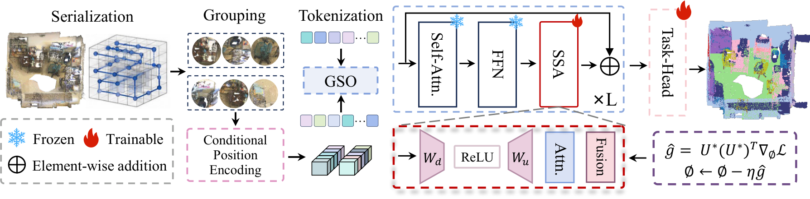
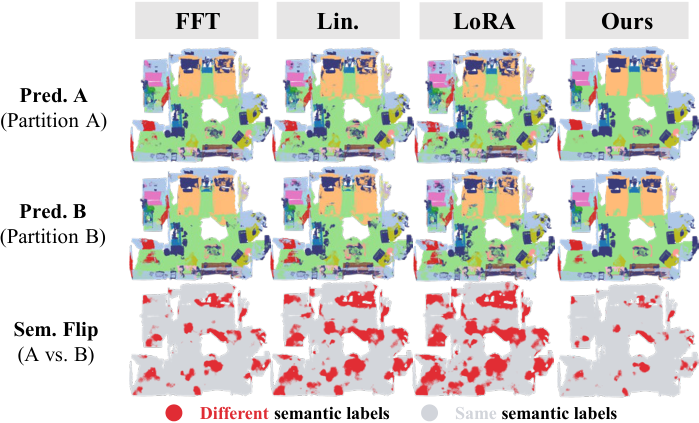
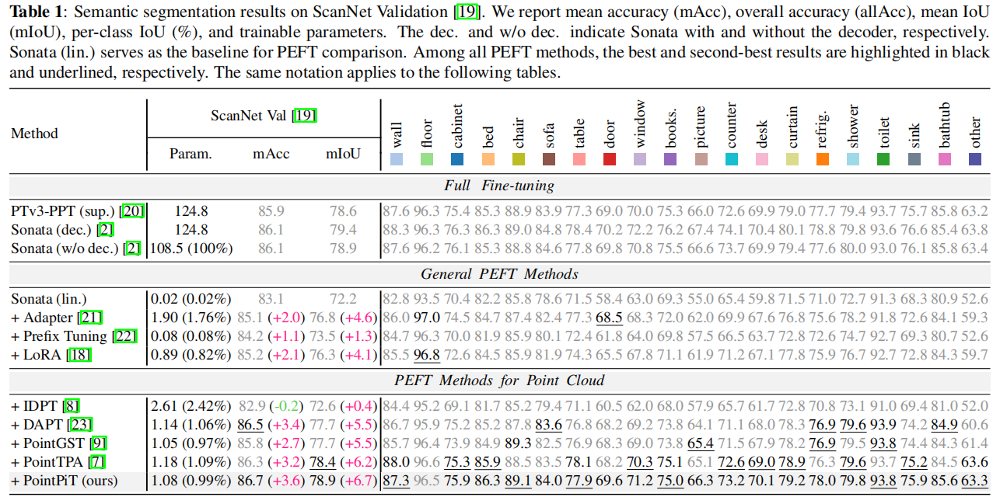
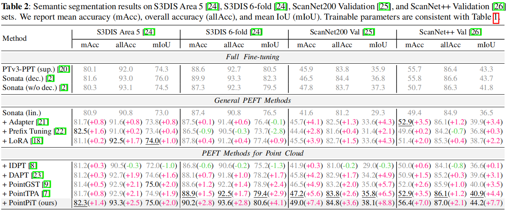
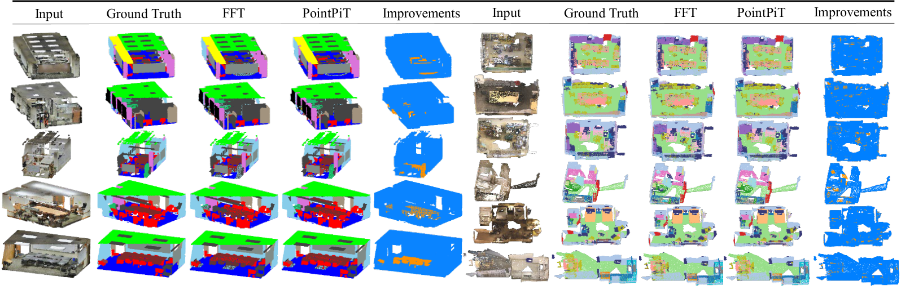

Abstract
Scene-level point cloud understanding remains challenging due to diverse geometries and spatial layouts. While pre-trained 3D point cloud foundation models offer strong transferability, full fine-tuning incurs substantial computational and storage costs. Existing parameter-efficient fine-tuning methods largely focus on object-level point clouds and overlook serialization-induced partition variations in large-scale scenes.
We propose PointPiT, a partition-invariant tuning framework for scene-level point clouds. A Scene-aware Structural Adapter (SSA) integrates local geometric patterns with global scene context to mitigate partition-induced representation shifts. Gradient Subspace Optimization (GSO) selects informative and partition-stable update directions, suppressing partition-dependent variations during optimization.
Across multiple scene-level benchmarks, PointPiT achieves competitive or superior performance to full fine-tuning with less than 1% of the backbone parameters, while consistently outperforming representative PEFT methods.
Method
PointPiT addresses partition sensitivity from two complementary directions. SSA stabilizes forward representations by fusing local bottleneck features with global scene context, while GSO constrains backward updates to the leading eigenspace of the Fisher information after penalizing partition-dependent gradient covariance.

Partition Sensitivity

The same physical scene can produce different local neighborhoods under valid serialization partitions. Linear probing and LoRA inherit or amplify these changes, whereas PointPiT produces substantially more consistent semantic predictions across partitions.
Experimental Results
We evaluate PointPiT on four indoor scene segmentation benchmarks using a Sonata-pretrained PTv3 backbone. PointPiT trains only 1.08M parameters and consistently improves over linear probing and existing point-cloud PEFT methods.
Scene-level Semantic Segmentation
| Dataset | Method | Param. | mAcc | allAcc | mIoU |
|---|---|---|---|---|---|
| ScanNet Val | Sonata (lin.) | 0.02M | 83.1 | – | 72.2 |
| PointTPA | 1.18M | 86.3 | – | 78.4 | |
| PointPiT (Ours) | 1.08M | 86.7 | – | 78.9 | |
| S3DIS Area 5 | PointPiT | 1.08M | 82.3 | 93.3 | 75.0 |
| S3DIS 6-fold | PointPiT | 1.08M | 90.2 | 93.6 | 80.6 |
| ScanNet200 Val | PointPiT | 1.08M | 49.0 | 84.8 | 38.1 |
| ScanNet++ Val | PointPiT | 1.08M | 56.4 | 87.0 | 44.2 |
Key Findings
- Parameter efficient: 1.08M trainable parameters, only 0.99% of the frozen backbone.
- Partition robust: consistently strong results across Z-order, Hilbert, Trans-Z, and Trans-H serialization.
- Complementary design: SSA and GSO improve ScanNet mIoU individually and reach 78.9% when combined.
- Cross-benchmark gains: state-of-the-art PEFT performance across four large-scale indoor benchmarks.


Qualitative Results

Compared with full fine-tuning, PointPiT generates accurate and structurally consistent predictions in complex indoor regions. The improvement maps highlight corrected semantic regions on S3DIS Area 5 and ScanNet.
BibTeX
@inproceedings{pointpit2027,
title = {Parameter-Efficient Fine-Tuning for 3D Scene Understanding},
author = {Anonymous},
booktitle = {IEEE International Conference on Acoustics,
Speech and Signal Processing (ICASSP)},
year = {2027},
url = {https://github.com/PRISM-AI-Lab/PointPiT}
}Acknowledgements
This project is built on Pointcept, Point Transformer V3, and Sonata. We thank the authors of these projects and the broader 3D vision community for making their work publicly available.
This page accompanies the PointPiT research code release. Final author, proceedings, arXiv, and DOI metadata will be added when the public paper record is available.